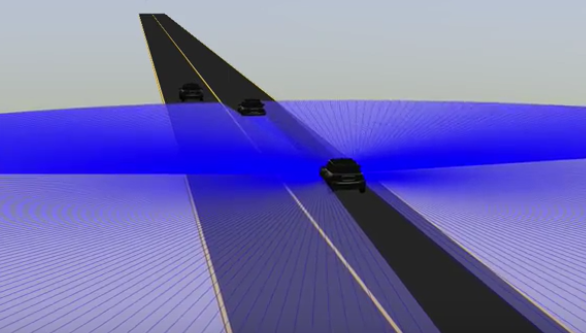
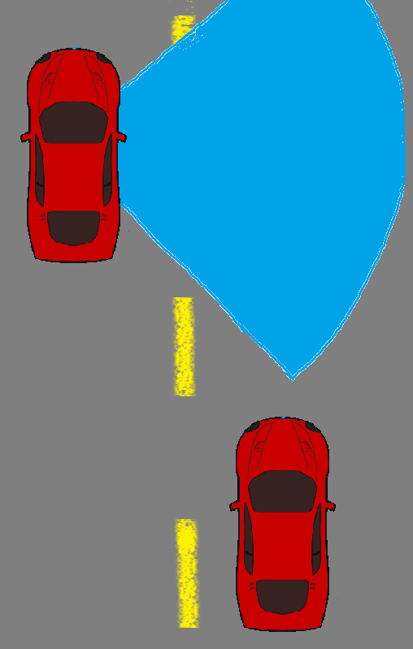

2. Description
We implemented the ability to overtake other cars on a straight road. Our car uses LIDAR (light detection and ranging) sensors to detect objects around it. While the car is lane driving in a straight road, it assesses whether to overtake by using LIDAR to check for cars in front and to check if the left lane is clear.

When there is a car in front and the left lane is clear, the car overtakes by changing lanes, passing the car, and changing back to the original lane when LIDAR determines that the right lane is clear (incorporating a margin of error for safety).
